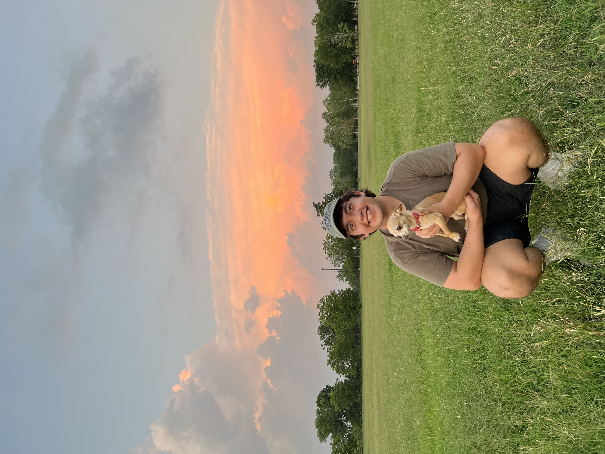

No hype. No jargon. Just well-built automation for operations-heavy businesses that are outgrowing how they work.
It starts with a call. I learn how the business runs, where work slows down, and what is actually worth automating. From there we scope the build together. Most clients have a working system within four to six weeks of our first conversation.
A short conversation. Free.
~45 minutesObserve the work. Decide what is worth automating.
~1 weekWire the systems. Test the edge cases.
~1–3 weeksLive, maintained, quietly running.
OngoingIf it happens more than once and follows a pattern, it can probably be automated. That is where I start.
Start a conversation →
I’m Juan González. I work with small business owners in services and professional firms who are running the company themselves and feeling the friction.
My background is in project coordination and operations. I spent four years managing 3,000+ projects and 2,400+ client meetings at a B2B agency, translating complex requirements into systems that actually moved. I’ve worked inside Salesforce, built multi-stage automation programs, led account teams, and now apply that same operational thinking to small business infrastructure using AI and modern automation tools.
The goal is always the same: less administrative weight, more room to work.
If you are running the operations yourself and feeling the weight of it, let’s talk. Tell me what is taking the most time and I will tell you whether it is worth automating.